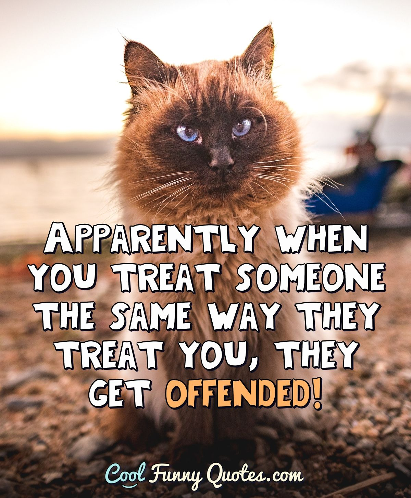

Recently I have been treated rude by a person at workplace.
I became a victim of his discourtecy during a random day at work. I suffered a lot from getting rid of my anger during the time. I even went to a counsellor for the incident.
People around me, especially my boyfriend, is worried of my mental conditions. He advised me not to take someone's word seriously, and get emotionally affect.
The counsellor gave me a practical advice, which is to see the rude person as a mirror, to always remind myself never become a rude colleague at work.
I received their advices and tried to make improvement on the way I thought. However, sometimes the aggresive feeling came back again when I interect with the rude guy.
I feel like wanting to treat him rude, or even more rude, like how I got treated. However, I know I have to suppress my anger. Sometimes suppressing the aggressive feeling can be exhausting.
Someone may think that the proper way should be telling him how I think about him. However, I cannot agree on that as for me, it is none of my reponsibilities to "educate" a "true" adult.
Since then, I know that this person has lost all my respects. I feel disgusting and wanting to run away everytime when dealing with this person at work.
